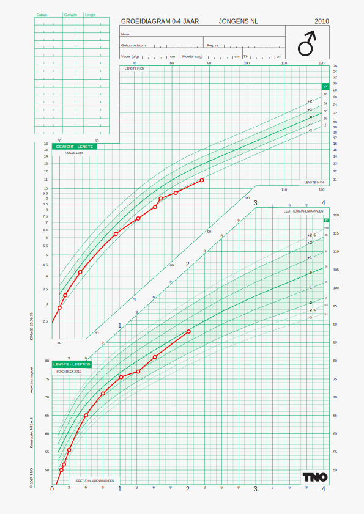

install.packages(c("remotes", "httr", "jsonlite", "dscore"))Practicum 1
Doel
Deze oefening is bedoeld om je eerste JAMES API call te maken.
- Je leert het JAMES versienummber en een groeidiagram te maken door the online JAMES server opdrachten te geven.
- Je leert ook hoe je groeidata in het juiste JSON format kunt gieten.
Voorbereiding
Start R, en controleer dat je minimaal R versie 4.1.0 hebt geïnstalleerd. Installeer daarna de volgende packages:
Installeer nu een aantal hulp-packages van JAMES. Dit kan enige tijd duren, omdat de packages van GitHub worden gedownload en gecompileerd.
remotes::install_github("growthcharts/jamesclient")
remotes::install_github("growthcharts/jamesdemodata")
remotes::install_github("growthcharts/bdsreader")Packages
Het
jamesclientpackage bevat onder meer dejames_post()functie die we gebruiken om JAMES aan te roepen. Raadpleeg https://growthcharts.org/jamesclient/index.html om de documentatie te zien, en welke andere functies hetjamesclientpackage bevat.Het
jamesdemopackage bevat een aantal voorbeeld datasets die we gebruiken in de oefeningen. Raadpleeg https://growthcharts.org/jamesdemodata/index.html voor de documentatie. De bestanden geven inzicht in hoe de JSON data eruit zien, en hoe je deze kunt gebruiken in de JAMES API calls.Het
bdsreaderpackage bevat een aantal functies om BDS bestanden te lezen en te converteren naar JSON. Dit is handig als je met groeidata werkt die in BDS-formaat zijn opgeslagen.
JAMES aanroepen
We gaan nu JAMES aanroepen. Dit kan op verschillende manieren. We laten hier de meest eenvoudige manier zien.
Laad het jamesclient package, en definieer een variabele host met het adres van de server waarop een open versie van JAMES draait.
library(jamesclient)
host <- Sys.getenv("JAMES_HOST")We illustreren eerst een methode die twee verzoeken naar de server stuurt. De onderstaande opdrachten roepen het eindpunt /version/json aan in de JAMES API.
resp <- james_post(host = host, path = "version/json")Type nu
respIndien alles goed is gegaan, dan krijg je de volgende output:
JAMES request: version/json
List of 4
$ package : chr "james"
$ packageVersion: chr "1.7.2"
$ packageDate : chr "2025-02-10"
$ Rversion : chr "4.4.1"Dit geeft aan dat de server goed bereikbaar is, en dat de JAMES versie 1.7.2 is.
JAMES response format
We hebben de /json output modifier gebruikt om de JSON-representatie op te vragen van het resultaat van de R-functie james::version(). Het resultaat van de functie is een object van de klasse james_httr en bestaat uit meerdere componenten:
class(resp)[1] "james_httr" "response" names(resp) [1] "url" "status_code" "headers" "all_headers" "cookies"
[6] "content" "date" "times" "request" "handle"
[11] "request_path" "parsed" "warnings" "messages" "session" De meeste elementen zijn gedocumenteerd in het response-object van het httr-pakket. Zo kunnen we bijvoorbeeld de functie httr::status_code(r) gebruiken om de statuscode op te vragen.
httr::status_code(resp)[1] 201De code 201 geeft aan dat de server goed bereikbaar is.
De functie james_post() voegt de laatste vijf elementen toe:
resp$request_pathgeeft het opgevraagde eindpunt weer, in dit geval/version/json;resp$parsedis een bewerkte versie van het elementresp$content. In geval van een foutmelding van de server staat het foutbericht hier;resp$warningsbevat eventuele waarschuwingen die tijdens de uitvoering zijn gegenereerd;resp$messagesbevat eventuele berichten, bijvoorbeeld fouten bij het inlezen van gegevens;resp$session(zoalsx0cb99a128a220a) is een unieke sessiecode.
In plaats van de /json output modifier kun je andere opgeven. Voor het version eindpunt is dat niet zo belangrijk, maar voor andere eindpunten kan dat wel. Vaak gebruikte output modifiers zijn: json, print, csv, md, svg. Daarnaast definieert JAMES de modifiers svglite, warnings, messages, console, stdout, info en parent.
Opdracht 1
Maak een lijst van beschikbare groeidiagrammen in JAMES. Hoeveel diagrammen biedt JAMES aan?
Opsturen van data
We gaan nu een voorbeeld dataset uit het jamesdemodata package gebruiken. De data zijn al in het juiste JSON-formaat.
fn <- system.file("json", "examples", "Kevin_S.json", package = "jamesdemodata")
cat(paste(readLines(fn, n = 20), collapse = "\n"), "\n..."){
"Format": "3.0",
"organisationCode": 0,
"reference": "Kevin S",
"clientDetails": [
{
"bdsNumber": 19,
"value": "1"
},
{
"bdsNumber": 20,
"value": "19890214"
},
{
"bdsNumber": 82,
"value": 241
},
{
"bdsNumber": 91,
"value": "2"
...We gebruiken de james_post() functie om de data op te sturen naar JAMES.
r1 <- james_post(host = host, path = "data/upload/json", txt = fn)
httr::status_code(r1)[1] 201Code 201 geeft aan dat de upload is geslaagd. JAMES heeft de data omgezet naar een vorm waarmee de onderliggende R packages van JAMES werken. Bijvoorbeeld, de eerste paar regels uit de meetdata van Kevin zijn:
head(r1$parsed$xyz) age xname yname zname zref x y z
1 0.000 age hgt hgt_z nl_2012_hgt_male_34 0.000 43.0 -1.004
2 0.137 age hgt hgt_z nl_2012_hgt_male_34 0.137 50.0 -0.766
3 0.175 age hgt hgt_z nl_2012_hgt_male_34 0.175 51.5 -0.904
4 0.252 age hgt hgt_z nl_2012_hgt_male_34 0.252 55.5 -0.646
5 0.501 age hgt hgt_z nl_2012_hgt_male_34 0.501 65.0 -0.224
6 0.750 age hgt hgt_z nl_2012_hgt_male_34 0.750 71.0 -0.082De betekenis van de kolommen bespreken we later.
Opdracht 2
Maak het A4 0-15 maanden groeidiagram voor Kevin (chartcode = "PJAAN34"). Gebruik het JAMES eindpunt path = "/charts/draw/svglite", geef de data mee als txt = fn gebruik query = list(height = 29.7/2.54, width = 21/2.54) voor het juiste formaat. Bewaar het diagram als SVG file met writeLines(resp$parsed, con = "kevin.svg")
Data converteren naar JSON
JAMES accepteert alleen individuele kinddata die volgens een vastgelegd JSON-schema zijn geformatteerd. Het actuele JSON data schema 3.0 implementeert een subset van de Basisdataset JGZ.
Het jamesdemodata package bevat voorbeeld datasets die al in het juiste JSON-formaat zijn opgeslagen. In de praktijk zullen we de data vaak in een ander formaat hebben, bijvoorbeeld in een data warehouse met BDS definities. Aangezien de precieze implementatie is sterk afhankelijk van de leverancier van het Elektronische Kinderdossier (EKD), is het niet mogelijk om een generieke oplossing te geven voor het converteren van BDS data naar JSON.
We gebruiken het bdsreader package om de data te converteren naar JSON.
Suppose we have the following growth data:
library(bdsreader)
minidata$child# A tibble: 3 × 14
src id dob sex etn edu ga bw twin agem smo hgtm hgtf
<chr> <dbl> <chr> <chr> <chr> <chr> <dbl> <dbl> <dbl> <dbl> <dbl> <dbl> <dbl>
1 smocc 11111 21-01… fema… NL midd… 39 2950 0 27 0 164 179
2 smocc 22222 18-01… male NL midd… 39 3730 0 24 1 164 186
3 smocc 33333 31-01… fema… NL midd… 40 3300 0 27 0 172 183
# ℹ 1 more variable: name <chr>head(minidata$time[, 1:13], 3)# A tibble: 3 × 13
src id rec nrec dob dom age sex etn ga bw hgt wgt
<chr> <dbl> <int> <int> <chr> <chr> <dbl> <chr> <chr> <dbl> <dbl> <dbl> <dbl>
1 smocc 11111 1 10 21-01… 21-0… 0 fema… NL 39 2950 48 2.95
2 smocc 11111 2 10 21-01… 27-0… 0.101 fema… NL 39 2950 53.5 4.18
3 smocc 11111 3 10 21-01… 20-0… 0.159 fema… NL 39 2950 56 5 We kunnen de data converteren naar JSON-formaat met de functie export_as_bds(). Deze functie heeft een aantal argumenten:
export_as_bds(data = minidata, ids = "22222", names = "Thomas", indent = 2)Processing file: Thomas.jsoncat(paste(readLines("Thomas.json", n = 10), collapse = "\n"), "\n..."){
"Format": "3.0",
"organisationCode": 0,
"reference": "Thomas S",
"clientDetails": [
{
"bdsNumber": 19,
"value": "1"
},
{
...We kunnen de data nu uploaden naar JAMES, en bijvoorbeeld een groeidiagram maken.
r <- james_post(host = host, path = "data/upload/json", txt = "Thomas.json")
resp <- james_post(host = host,
path = "/charts/draw/svglite",
txt = fn,
chartcode = "NJBA", selector = "chartcode",
query = list(height = 29.7/2.54, width = 21/2.54))
writeLines(resp$parsed, con = "img/thomas.svg")
Opdracht 3
Kopieer het JSON bestand van Maria.
fn <- system.file("json", "examples", "maria.json", package = "jamesdemodata")
file.copy(fn, "maria.json")Voeg handmatig een extra lengtemeting toe aan de twee bestaande metingen, en maak het groeidiagram van lengte.